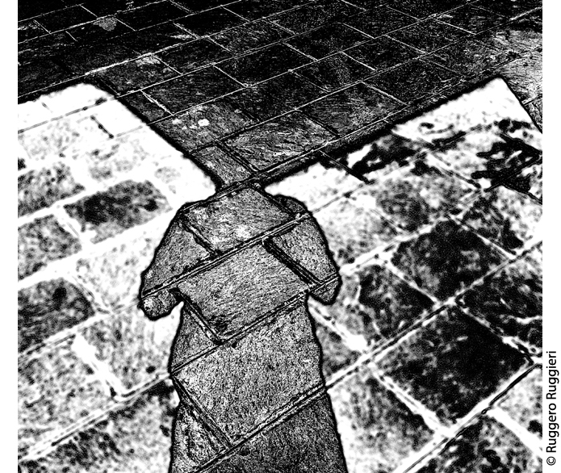

Virtuale si dice di cosa che non è posta in atto benché possa
esserlo. Virtuale vuol dire potenziale: lo
vedo, lo immagino ma non è concreto, non lo posso toccare.
Il concetto di virtuale in fotografia è centrale. Se ne parla
molto e da molto tempo, in particolare da quando il digitale ha
interrotto la dipendenza del fotografo dalle pellicole e da
altri passaggi.
Ma usando il termine virtuale questa volta intendiamo
andare oltre linutile diatriba analogico versus
digitale per addentrarci in questioni più sottili ma
importanti.
Ci domandiamo: vivere la fotografia solo ed esclusivamente in
maniera potenziale, senza mai portarla in una dimensione fisica,
attraverso la stampa, che tipo di effetti produce? Quali
conseguenze ha?
Stiamo vivendo nellepoca dei contest fotografici
online in cui tutto si svolge in rete; siamo felici
quando riviste importanti scelgono le nostre fotografie per il
loro sito; scattiamo migliaia di foto che poi dimentichiamo;
visitiamo sempre più spesso le nuove Virtual Gallery
dove un artista può creare la sua galleria virtuale gratuita,
promuoversi o vendere oppure partecipare a inaugurazioni
documentate in tempo reale, e ancora, sempre in connessione
con i social, taggare, condividere, pubblicare
che
cosa? Qualcosa che non è posto in atto benché possa esserlo.
La fotografia in questi termini è più un concetto,
unentità sempre più fuggevole, impalpabile, a
cui si collegano di conseguenza nuove regole non
dette, nuovi modi di produrre unopera, di vivere il
rapporto con essa e con le persone che la fruiscono, che la
comprano, che la conservano, che la consumano.
Nellaccezione virtuale alcune parole assumono sempre più
sfumature nuove, vengono alterate; così
realizzare
può anche voler dire solo mostrare.
Allo stesso modo altri termini come condivisione, autorialità,
autorità mutano il loro senso.
Dallaltro lato cè ancora la fisicità, la concretezza della
fotografia: loggetto che si stampa, si espone, si può
toccare e si può vendere. Certo! Perché alla fine, come
insegnano le invendibili performance, è a qualcosa di fisico che
ci si deve attenere.
In un racconto molto inquietante scritto da Borges La
biblioteca di Babele si narra di un luogo in cui
sono conservati tutti i libri possibili, le possibili loro
varianti e ogni libro ad esso opposto. Miliardi e miliardi di
libri, tutti i libri possibili, così tanti e diversi da
diventare in fondo solo potenziali, solo libri auto-destinati ad
azzerarsi.
Un azzeramento che ricorda quello a cui, un po inconsapevoli,
potremmo andare in contro attuando certe scelte.
Simona Guerra e Lisa Calabrese